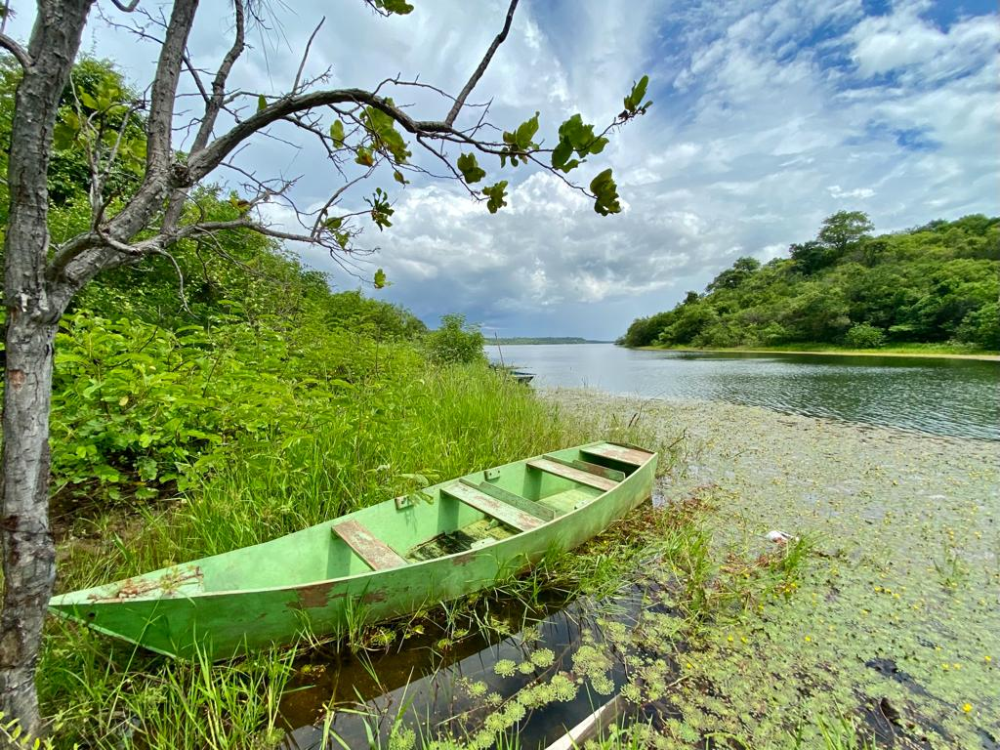

Povoado Salinas
Margeado pela Rodovia Transamazônica (BR - 230), o Povoado Salinas é um município de São Francisco do Piauí, PI. Região na qual localiza-se a Barragem Salinas, que represa o Rio Salinas (principal curso d'água da região) afluente que deságua no Rio Canindé. Este principal curso d'água faz parte da bacia hidrográfica Canindé-Parnaíba. A Barragem é a maior em abastecimento familiar do Piauí, com capacidade em seu volume máximo para 41 hm3 de água.
O Povoado faz parte da microrregião de Floriano, a unidade geomorfológica da região é de Planalto com vales e chapadas, situado em um compartimento topográfico de regime relictual: topo. O clima é tropical semiárido quente, com duração no período seco de sete a oito meses, propiciando uma vegetação de caatinga arbórea, arbustiva e manchas de campo cerrado e cerradão. O solo da região são do tipo Latossolos vermelho-amarelo distróficos associados a solos litólicos distróficos, areias quartzosas distróficas e solos indiscriminados concrecionários tropicais (IBGE - CEPRO, 2002)
REFERÊNCIAS:
- ANA - Agência Nacional de Águas Salinas/PI. Reservatórios do Semiárido Brasileiro: hidrologia, balanço hídrico e operação. Relatório Final. Agência Nacional de Águas - Brasília: ANA, Engecorps Engenharia S.A., 2016.
- Fundação CEPRO, Piauí – Informações Municipais – 2000 – Anuário Estatístico do Piauí – 2001.
- IBGE, Diário Oficial da União N o 198, de 11.10.2002 – CEPRO, Atlas do Piauí – 1990. Ministério das Minas e Energia/CPRM, Mapa Geográfico do Estado do Piauí – 1995.
- FOTOS:Fonte Elaboração Própria